Service & repair
Leaking fixtures, toilet repairs, replacements, and the plumbing problems that interrupt your day.
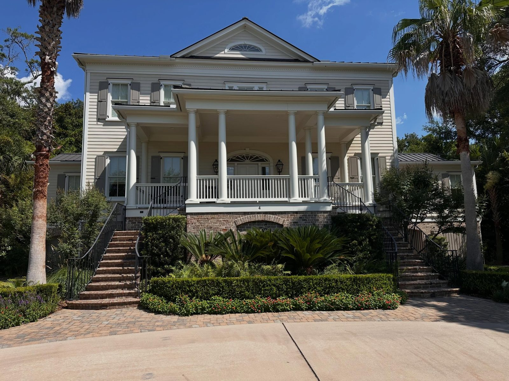
Veteran owned & operated · Charleston, SC
Trusted plumbing for historic renovations, custom homes, and everyday service work across the Lowcountry.
01 Veteran owned
02 Licensed & insured
03 Local craftsmanship
04 Free estimates
Plumbing for Charleston homes
Lowcountry homes rarely fit a template. Southern Flow approaches each project with a practical plan, careful coordination, and respect for the finished space—from hidden rough-ins to the fixtures you see every day.
How Southern Flow helps
Everyday plumbing issues, careful renovations, custom-home installation, and water solutions—all handled with the same hands-on attention.
Leaking fixtures, toilet repairs, replacements, and the plumbing problems that interrupt your day.
Rough-in through trim-out for bathrooms, kitchens, additions, and historic-home updates.
Thoughtful system planning, fixture coordination, and clean installation for new homes.
Whole-home filtration and smart leak-control solutions designed around your property.
Selected work
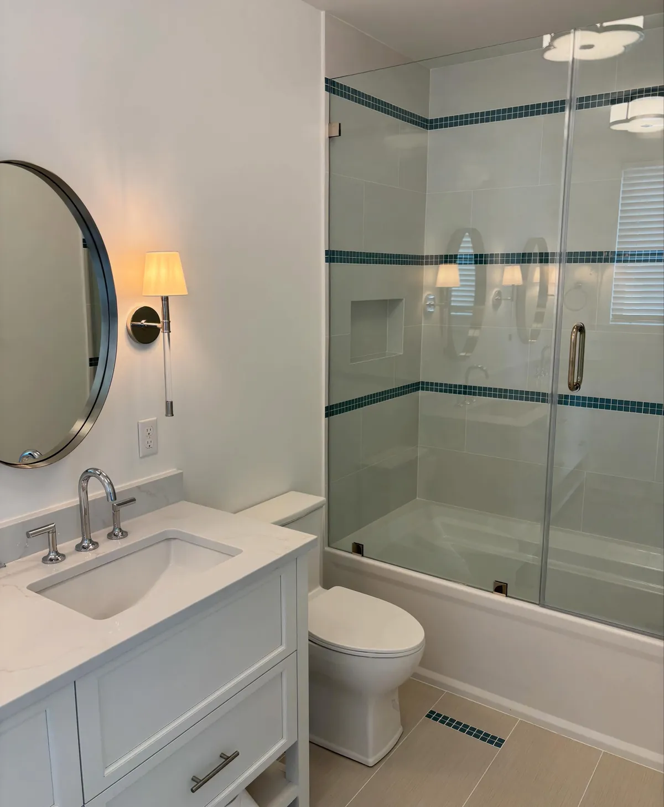
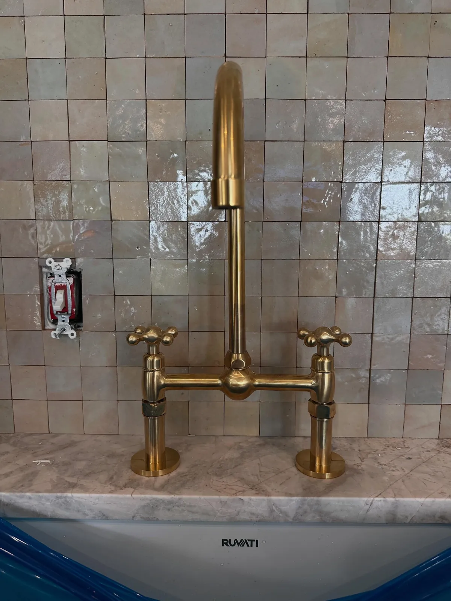
From the field
Real work from Southern Flow’s Instagram—finished fixtures, behind-the-wall preparation, service replacements, and water-protection systems.
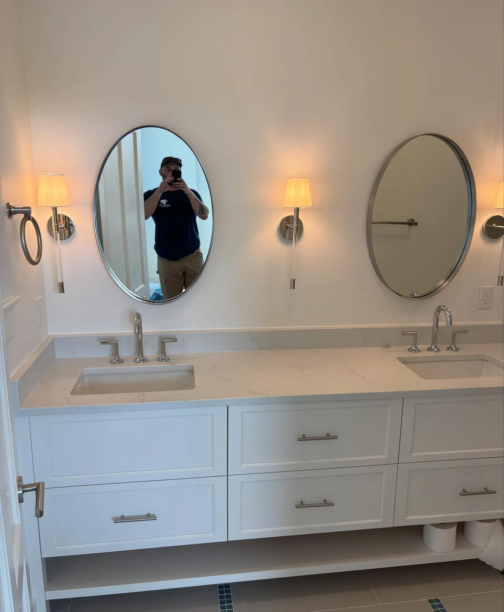
Final plumbing trim-out for a Sullivan’s Island home, including bathroom fixtures, shower controls, and kitchen finishes.
View original post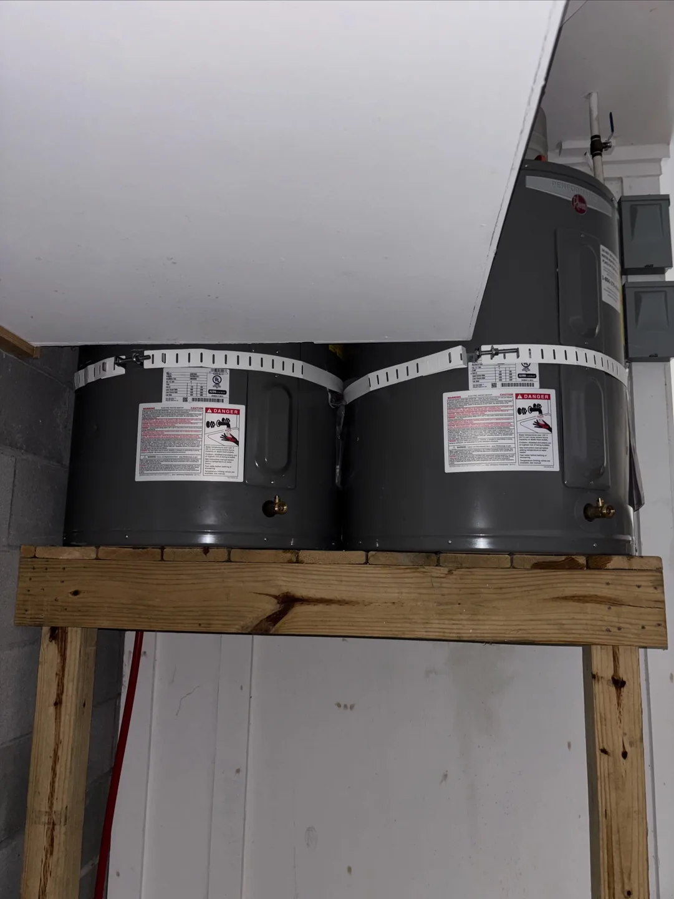
Two aging water heaters replaced and organized within a compact utility space at a Seabrook Island home.
View original post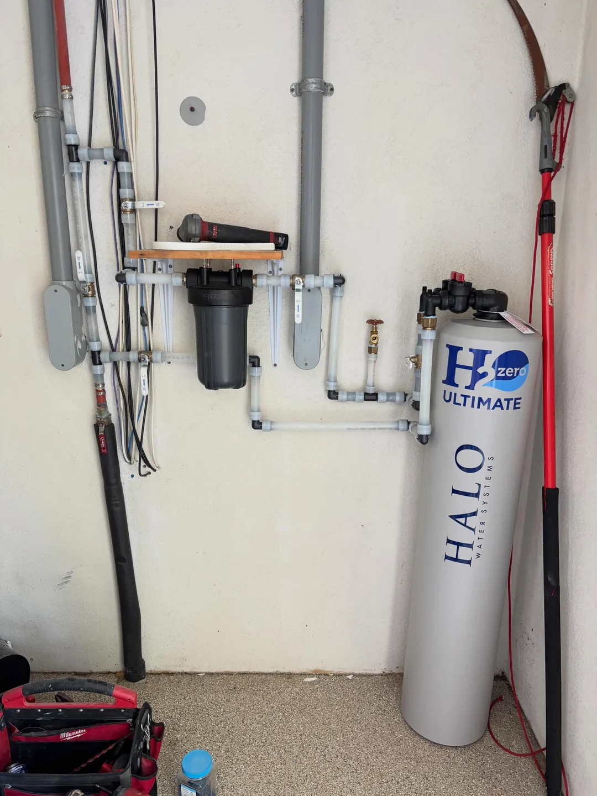
A HALO whole-house filtration system installed with organized piping and clear access for future service.
View original post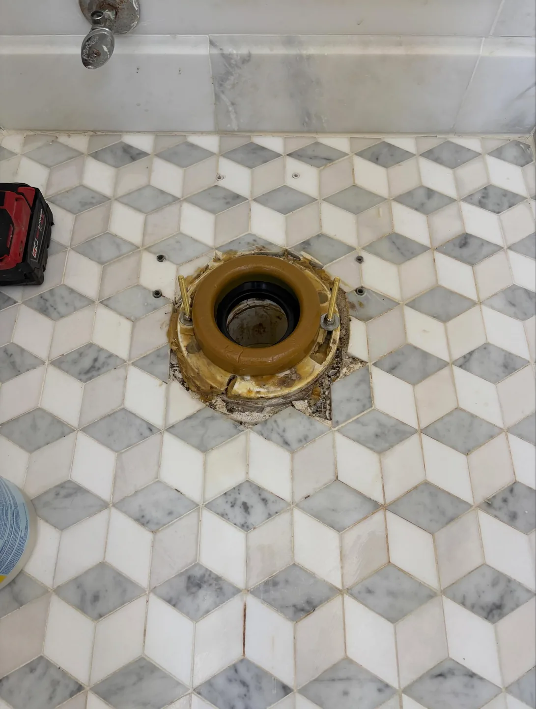
Two toilet replacements in a downtown Charleston home, with careful work around the existing tile and finished space.
View original post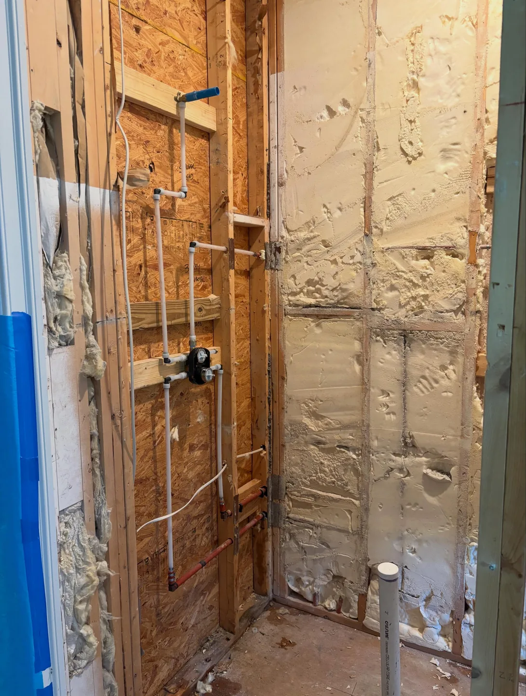
Water, drain, and fixture connections placed behind the walls before the bathroom renovation moved into its finish phase.
View original post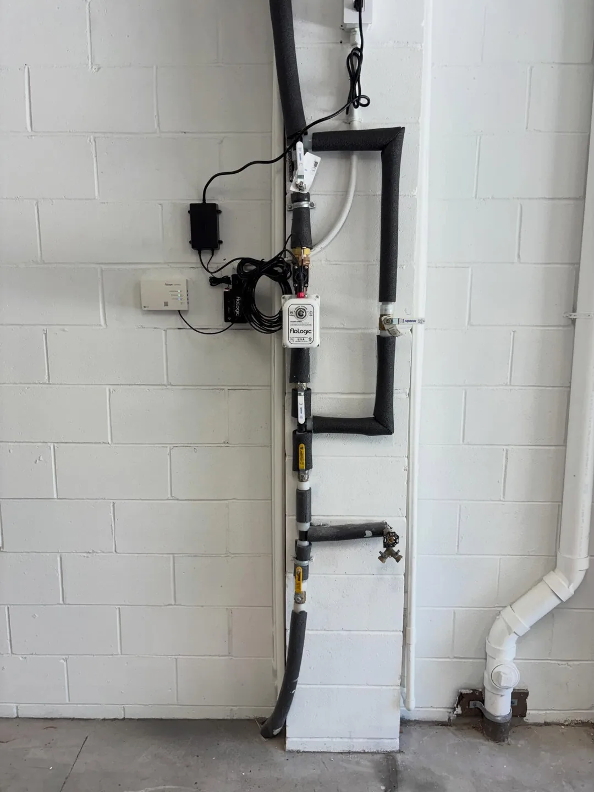
A FloLogic system installed for remote water monitoring and automatic shutoff when a possible leak is detected.
View original post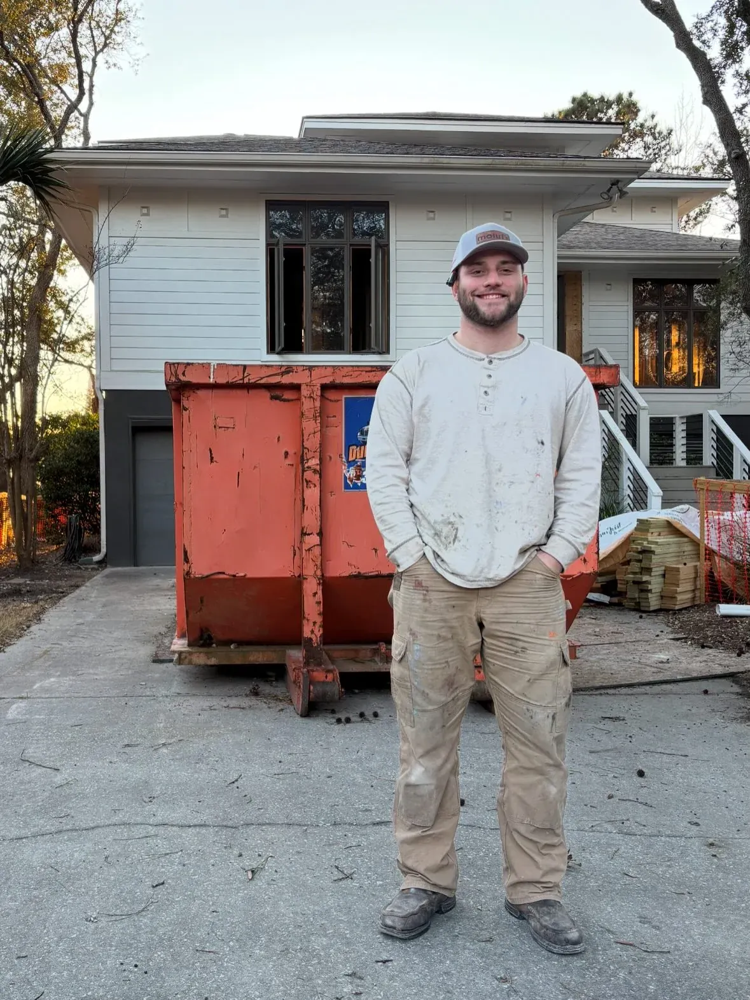
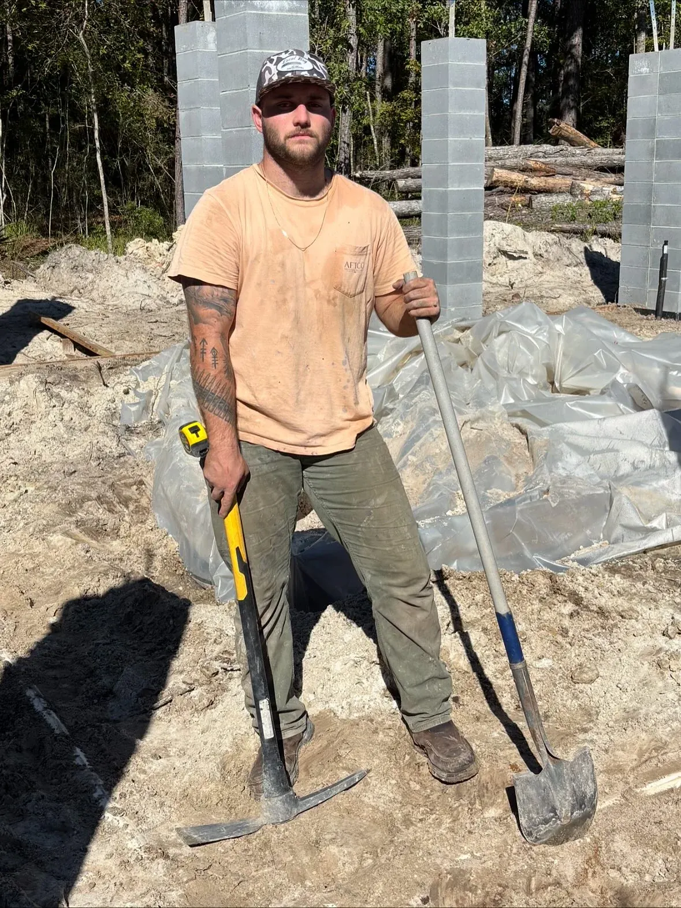
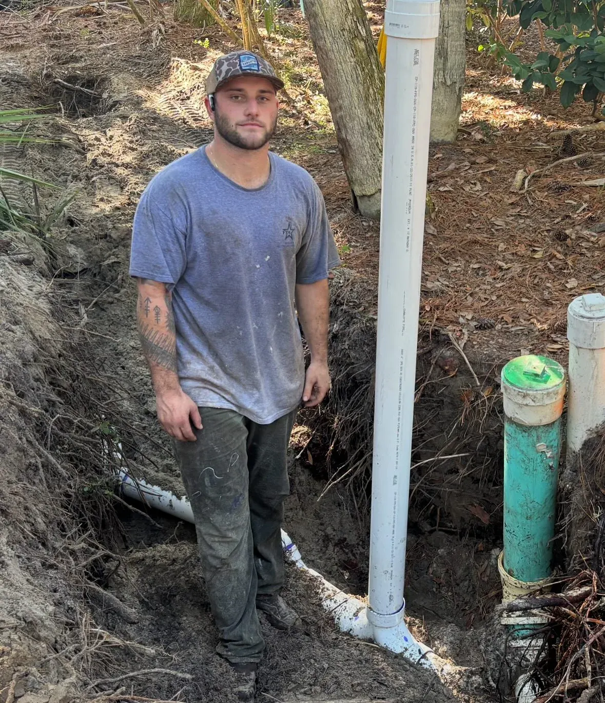
Chase on site across Southern Flow projects.
Meet the owner
Chase Sandler leads Southern Flow Plumbing with a straightforward, service-minded approach. He brings close attention to the details behind the walls and respect for the finished space—whether the project is a historic Charleston renovation, custom coastal home, or everyday repair.
As a veteran-owned local business, Southern Flow is built around responsibility, clear communication, and work done with care.
Where we work
Southern Flow has completed or featured work across the communities below. Call to confirm scheduling and availability for your address.
Check availabilityCustomer reviews
Public feedback shared on Southern Flow project posts. Follow each review to see its original Instagram comment.
“@southern_flow_plumbing is the only way to go! 👏👏”
“Beautiful work!! ❤️”
Business credentials
Current licensing and insurance documentation is available upon request. Ask for the applicable credentials when discussing your project.
Preferred estimate route
Tell Chase where the project is located and what kind of plumbing help you need. Calling is the estimate route Southern Flow shares most often.
843-793-8806